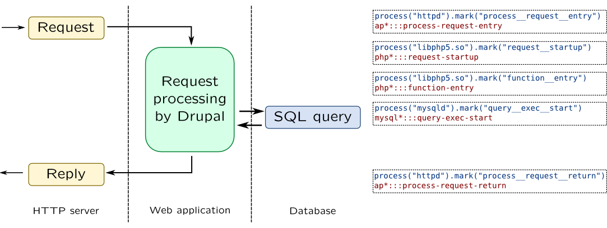

Web applications
Many interpreted languages that are used in Web development like Python, Perl, PHP and Ruby implement USDT probes. Some HTTP servers like Apache HTTP server (there is also an nginx fork, called nginx-dtrace) and databases such as MySQL, PostgreSQL and Berkeley DB provide them too. Let's see how that can be used to trace a real web application like Drupal CMS framework.
Warning
Despite that Apache HTTP server declares support of USDT probes, it is not supported by its build system (as you can remember, you need to perform additional steps and build extra object file). Due to that, when you build it, with --enable-dtrace option, you will see error message:
DTrace Support in the build system is not complete. Patches Welcome!
There is a patch written by Theo Schlossnagle that modifies build system properly, but it won't accepted. You can find fresh version of it in a bug 55793.
An alternative of that is to use mod_dtrace module, but we won't discuss it in our book.
We will use Drupal with MySQL database running under Zend PHP interpreter in Apache web-server in mod_php mode. You can also use PHP-FPM, but it makes requests mapping harder as requests would be processed by different processes. In our case, without PHP-FPM, web-application and http-server would be of same context:

You will need to use provider name to access PHP, MySQL and Apache HTTP Server probes. Their naming convention is the same as any other USDT probe:
php*:::probe-name mysql*:::probe-name ap*:::probe-nameSame works for SystemTap: provider names are optional, but you will need to specify full path to a binary file or use its name and setup
PATH environment variable:
process("httpd").mark("probe__name")
process("mysqld").mark("probe__name")
process("libphp5.so").mark("probe__name")
We will use full paths in macros in example scripts.
Here are list of arguments and names of some useful Apache probes:
| Action | DTrace | SystemTap |
| Request is redirected |
internal-redirect
|
internal__redirect
|
| Request is read from socket |
read-request-entry
|
read__request__entry
|
read-request-success
|
read__request__success
|
|
read-request-failure
|
read__request__failure
|
|
| Request is processed |
process-request-entry
|
process__request__entry
|
process-request-return
|
process__request__return
|
|
Warning
When read-request-entry/read__request__entry probe is firing, request_rec structure fields is not yet filled.
There are also many Apache Hooks probes, but they are not providing useful arguments.
Following table provides list of useful PHP SAPI probes:
| Action | DTrace | SystemTap |
| Request processing | ||
| Request processing started |
request-startup
|
request__startup
|
| Request processing finished |
request-shutdown Arguments are same as for request-startup |
request__shutdown Arguments are same as for request__startup |
| Compiler | ||
| Compilation |
compile-file-entry
|
compile__file__entry
|
| File is compiled |
compile-file-return Arguments are same as for compile-file-entry |
compile__file__return Arguments are same as for compile__file__entry |
| Functions | ||
| Function call |
function-entry
|
function__entry
|
| Function return |
function-return Arguments are same as for function-entry |
function__return Arguments are same as for function__entry |
| VM execution | ||
| Beginning of operation execution |
execute-entry
|
execute__entry
$arg1 — file name
$arg2 — line number |
| Beginning of operation execution |
execute-return
|
execute__return
|
| Errors and exceptions | ||
| PHP error |
error
|
error
|
| Thrown exception |
exception-thrown
arg0 — exception class name |
exception__thrown
arg0 — exception class name |
| Caught exception |
exception-caught
|
exception__caught
|
MySQL has wide set of probes. They are described in MySQL documentation: 5.4.1 mysqld DTrace Probe Reference. Here are list of basic probes which allow to trace queries and connections:
| Action | DTrace | SystemTap |
| Connection |
connection-start
|
connection__start
|
connection-done
|
connection__done
|
|
| Query parsing |
query-parse-start
|
query__parse__start
|
query-parse-done
|
query__parse__done
|
|
| Query execution |
query-exec-start
|
query__exec__start
|
query-exec-done
|
query__exec__done
|
|
Here are simple tracer for PHP web application which is written on SystemTap:
@define httpd %( "/usr/local/apache2/bin/httpd" %)
@define libphp5 %( "/usr/local/apache2/modules/libphp5.so" %)
@define mysqld %( "/usr/local/mysql/bin/mysqld" %)
global parsequery;
global execquery;
function basename:string(s:string) {
len = strlen(s)
i = len
while(i > 0) {
/* 47 is code for '/' */
if(stringat(s, i - 1) == 47)
return substr(s, i, len - i);
--i;
}
return s;
}
probe process(@httpd).mark("internal__redirect") {
printf("[httpd] redirect\t'%s' -> '%s'\n",
user_string($arg1), user_string($arg2));
}
probe process(@httpd).mark("read__request__entry") {
printf("[httpd] read-request\n");
}
probe process(@httpd).mark("read__request__success") {
servername = ($arg4) ? user_string($arg4) : "???";
printf("[httpd] read-request\t%s %s %s [status: %d]\n",
user_string($arg2), servername, user_string($arg3), $arg5);
}
probe process(@httpd).mark("process__request__entry") {
printf("[httpd] process-request\t'%s'\n", user_string($arg2));
}
probe process(@httpd).mark("process__request__return") {
printf("[httpd] process-request\t'%s' access-status: %d\n",
user_string($arg2), $arg3);
}
probe process(@libphp5).mark("request__startup"),
process(@libphp5).mark("request__shutdown") {
printf("[ PHP ] %s\n\t%s '%s' file: %s \n", pn(), user_string($arg3),
user_string($arg2), user_string($arg1));
}
probe process(@libphp5).mark("function__entry"),
process(@libphp5).mark("function__return") {
printf("[ PHP ] %s\n\t%s%s%s file: %s:%d \n", pn(),
user_string($arg4), user_string($arg5), user_string($arg1),
basename(user_string($arg2)), $arg3);
}
probe process(@mysqld).mark("query__parse__start") {
parsequery[tid()] = user_string_n($arg1, 1024);
}
probe process(@mysqld).mark("query__parse__done") {
printf("[MySQL] query-parse\t'%s' status: %d\n", parsequery[tid()], $arg1);
}
probe process(@mysqld).mark("query__exec__start") {
execquery[tid()] = user_string_n($arg1, 1024);
}
probe process(@mysqld).mark("query__exec__done") {
printf("[MySQL] query-exec\t'%s' status: %d\n", execquery[tid()], $arg1);
}
[httpd] read-request [httpd] read-request GET ??? /drupal/modules/contextual/images/gear-select.png [status: 200] [httpd] process-request '/drupal/modules/contextual/images/gear-select.png' [httpd] process-request '/drupal/modules/contextual/images/gear-select.png' access-status: 304 [httpd] read-request [httpd] read-request GET ??? /drupal/ [status: 200] [httpd] process-request '/drupal/' [ PHP ] request-startup GET '/drupal/index.php' file: /usr/local/apache2/htdocs/drupal/index.php [ PHP ] function-entry main file: index.php:19 [ PHP ] function-return main file: index.php:19 … [ PHP ] function-entry DatabaseStatementBase::execute file: database.inc:680 [MySQL] query-parse 'SELECT u.*, s.* FROM users u INNER JOIN sessions s ON u.uid = s.uid WHERE s.sid = 'yIR5hLWScBNAfwOby2R3FiDfDokiU456ZE-rBDsPfu0'' status: 0 [MySQL] query-exec 'SELECT u.*, s.* FROM users u INNER JOIN sessions s ON u.uid = s.uid WHERE s.sid = 'yIR5hLWScBNAfwOby2R3FiDfDokiU456ZE-rBDsPfu0'' status: 0 ... [ PHP ] request-shutdown GET '/drupal/index.php' file: /usr/local/apache2/htdocs/drupal/index.php [httpd] process-request '/drupal/index.php' access-status: 200
As you can see from this trace, there is a request of a static image gear-select.png which is resulted in status 304 and a dynamic page index.php which eventually accesses database to check user session.
Warning
You will need to restart Apache HTTP server after you start web.stp script.
Due to high amounts of script outputs, you will need to increase buffers in DTrace. The rest of script will look similar to web.stp:
#pragma D option strsize=2048
#pragma D option bufsize=128M
#pragma D option switchrate=20hz
ap*:::internal-redirect {
printf("[httpd] redirect\t'%s' -> '%s'\n", copyinstr(arg0), copyinstr(arg1));
}
ap*:::read-request-entry {
printf("[httpd] read-request\n");
}
ap*:::read-request-success {
this->servername = (arg3) ? copyinstr(arg3) : "???";
printf("[httpd] read-request\t%s %s %s [status: %d]\n",
copyinstr(arg1), this->servername, copyinstr(arg2), arg4);
}
ap*:::process-request-entry {
printf("[httpd] process-request\t'%s'\n", copyinstr(arg1));
}
ap*:::process-request-return {
printf("[httpd] process-request\t'%s' access-status: %d\n",
copyinstr(arg1), arg2);
}
php*:::request-startup,
php*:::request-shutdown {
printf("[ PHP ] %s\t%s '%s' file: %s \n", probename,
copyinstr(arg2), copyinstr(arg1), copyinstr(arg0));
}
php*:::function-entry,
php*:::function-return {
printf("[ PHP ] %s\t%s%s%s file: %s:%d \n", probename,
copyinstr(arg3), copyinstr(arg4), copyinstr(arg0),
basename(copyinstr(arg1)), arg2);
}
mysql*:::query-parse-start {
self->parsequery = copyinstr(arg0, 1024);
}
mysql*:::query-parse-done {
printf("[MySQL] query-parse\t'%s' status: %d\n", self->parsequery, arg0);
}
mysql*:::query-exec-start {
self->execquery = copyinstr(arg0, 1024);
}
mysql*:::query-exec-done {
printf("[MySQL] query-exec\t'%s' status: %d\n", self->execquery, arg0);
}